【10月28日(五) 17:00更新】
【公告的主要追記・更新履歴】 ■新追加梵谷的幕間物語！(10/28追記)NEW ■梵谷的「幕間物語」就算未召喚從者也開放！(10/28追記)NEW
舉辦『「主線分支 虛數大海戰 幻想急航 ～上浮吧鸚鵡螺號～」發佈記念宣傳活動』！
◆宣傳活動舉辦期間◆
2022年10月26日(三) 17:00～11月30日(三) 11:59
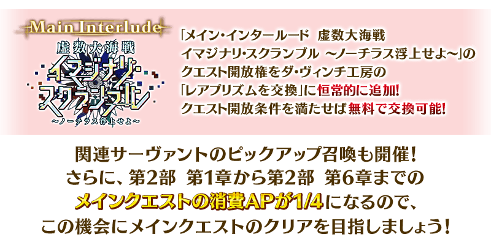
※本頁面皆為開發中圖片。會有與實際圖片相異的情況。

「主線分支 虛數大海戰 幻想急航 ～上浮吧鸚鵡螺號～」永久追加！
「主線分支 虛數大海戰 幻想急航 ～上浮吧鸚鵡螺號～」的關卡開放權在達文西工房的「稀有稜鏡交換」永久追加。 ※「主線分支 虛數大海戰 幻想急航 ～上浮吧鸚鵡螺號～」是伴隨在2020年舉辦的期間限定活動「虛數大海戰 幻想急航 ～上浮吧鸚鵡螺號～」的主線分支化，有一部份調整。
在滿足下述的交換條件後，才能於達文西工房的「稀有稜鏡交換」交換。 並且，交換所需的稀有稜鏡為「0個」，滿足關卡開放權的交換條件就能免費交換。
◆關卡開放權交換可能條件◆
滿足以下條件的御主才能交換
・通過第2部 第4章「Lostbelt No.4 創世滅亡輪廻 由伽・剎多羅 黑色最終之神」
※不需要通過亞種特異點(從Ⅰ到Ⅳ)。
◆追加時間◆
2022年10月26日(三) 17:00～
◆追加道具(永久)◆
| 追加道具 | 能交換次數 | 1次交換所需的 稀有稜鏡數 |
|---|---|---|
| 「主線分支 虛數大海戰 幻想急航」關卡開放權 | 1次 | 0個 |
※在「稀有稜鏡交換」追加的「主線分支 虛數大海戰 幻想急航」關卡開放權為永久，沒有交換期限。
◆有關「主線分支 虛數大海戰 幻想急航 ～上浮吧鸚鵡螺號～」的注意◆
※就算已經通過下述的期間限定活動的情況也可遊玩。
・期間限定活動「虛數大海戰 幻想急航 ～上浮吧鸚鵡螺號～」
※故事與「虛數大海戰 幻想急航 ～上浮吧鸚鵡螺號～」同樣內容。
※在過去舉辦的「虛數大海戰 幻想急航 ～上浮吧鸚鵡螺號～」獲得過「聖杯」的情況，「主線分支 虛數大海戰 幻想急航 ～上浮吧鸚鵡螺號～」中會以「傳承結晶」代替「聖杯」做為通過報酬。
※在過去舉辦獲得過「指令紋章」的情況，「主線分支 虛數大海戰 幻想急航 ～上浮吧鸚鵡螺號～」的對象關卡中可獲得稀有稜鏡或魔力稜鏡代替「指令紋章」。
※無法獲得一部份道具。
※「主線分支 虛數大海戰 幻想急航 ～上浮吧鸚鵡螺號～」中「無戰鬥」的海域探査關卡，不計算在每日任務、教學任務的「通過〇次關卡」。
※在關卡通過時可獲得的戰利品及關卡通過報酬與過去舉辦的「虛數大海戰 幻想急航 ～上浮吧鸚鵡螺號～」的報酬不同。
※無法遊玩自由關卡等一部份的關卡。
※適用的支援編制設定成「平常關卡」。
【從活動舉辦時的變更點】
・在進行海域掃描時，變成不消耗資源
・在進行「支援請求」時，變成不消耗資源
・在施行海域掃描中就算碰到敵影，變成不會停止海域掃描
・調整主線關卡 第三幕的一部份戰鬥內容，NPC從者變成固定為先發隊員
 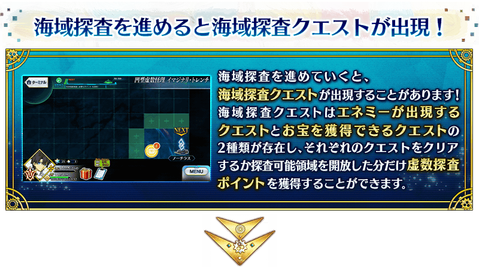
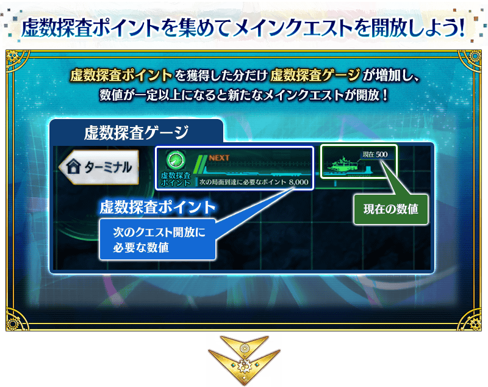
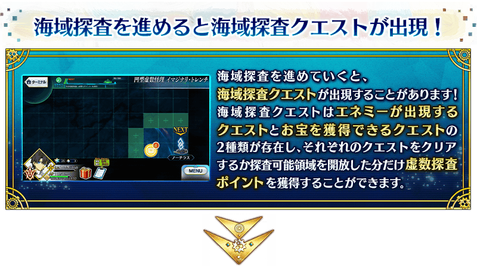
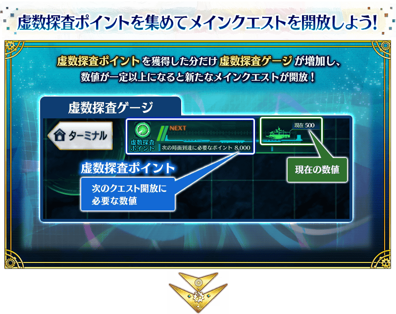
關於海域探査
「主線分支 虛數大海戰 幻想急航 ～上浮吧鸚鵡螺號～」中，地圖畫面上的可探査領域邊「海域探査」邊推進。
海域探査中，對可探査領域施行海域掃描的話，會開放隠藏地點。
【從活動舉辦時的變更點】
「主線分支 虛數大海戰 幻想急航 ～上浮吧鸚鵡螺號～」中，在進行海域掃描時不會消耗資源。
還有在關卡通過時就算尚未完全探査地圖的情況，在通過包含海域探査關卡的全部關卡時「主線分支 虛數大海戰 幻想急航 ～上浮吧鸚鵡螺號～」就會結束。
推進海域探査的話會有可發現海域探査關卡的情況。 在海域探査關卡存在「出現敵人的海域探査關卡」與「可獲得寶物的海域探査關卡」2種，「出現敵人的海域探査關卡」是與阻止海域探査去路的難纏敵人的戰鬥，「可獲得寶物的海域探査關卡」是可獲得報酬。
另外，通過任何海域探査關卡來開放可探査領域的話，能獲得虛數探査點數。
收集一定量的虛數探査點數後會開放下個主線關卡，以施行海域探査從虛數之海逃脫為目標吧！
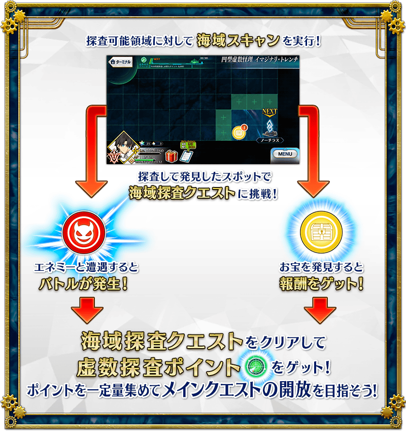
關於海域掃描
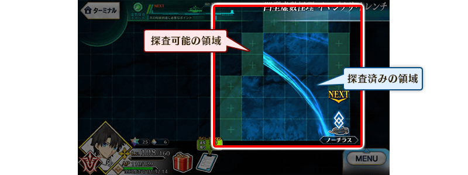
明亮的領域是「探索完畢」，灰暗的領域是「可以探索」。在可探査領域進行海域掃描的話，可讓該領域探査完畢。
海域掃描，能對與探査完畢領域相鄰的可探査領域施行。但是，無法對與敵影相鄰的領域施行。
海域掃描會有好幾種，推進主線關卡的話會增加能使用的掃瞄。
根據使用的掃瞄會有可探査範圍差異，考量波紋和敵影的位置施行海域掃描，推進海域探査吧。
【從活動舉辦時的變更點】
「主線分支 虛數大海戰 幻想急航 ～上浮吧鸚鵡螺號～」中，在施行海域掃描中就算碰到敵影也不會停止海域掃描。
另外，在海域掃描的演出中點擊畫面的話，可讓演出高速化。
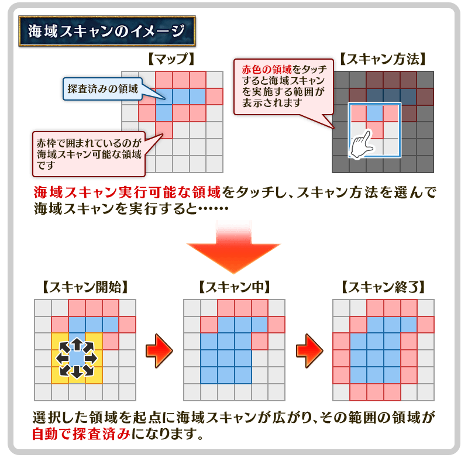
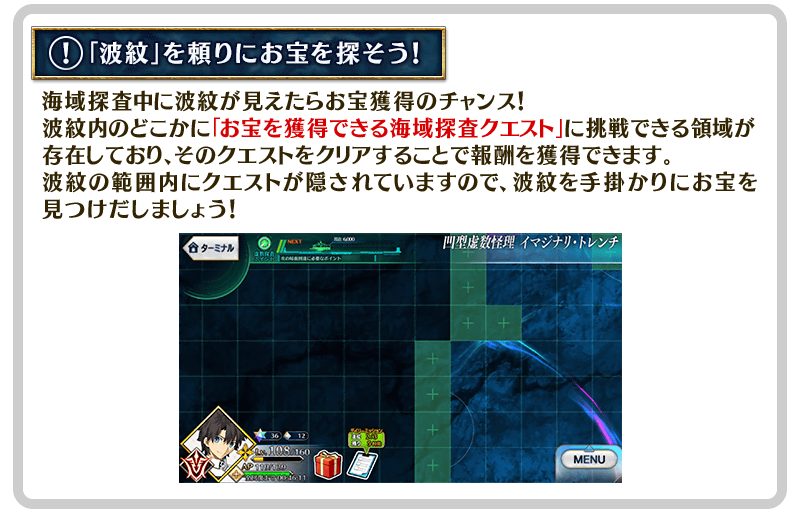
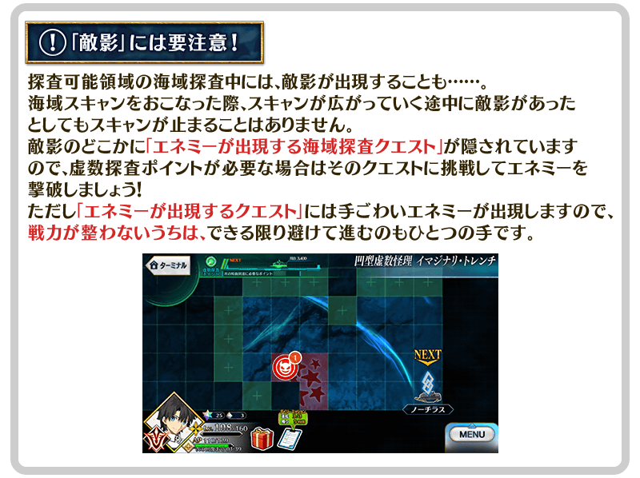
關於「支援請求」
「主線分支 虛數大海戰 幻想急航 ～上浮吧鸚鵡螺號～」中，通過特定關卡的話變得可進行「支援請求」。
使用「支援請求」的話可受到來自同行中從者的援護，在戰鬥中對我方或敵人發揮特別的效果。
【從活動舉辦時的變更點】
「主線分支 虛數大海戰 幻想急航 ～上浮吧鸚鵡螺號～」中，在進行「支援請求」時不會消耗資源。
「支援請求」在「主線分支 虛數大海戰 幻想急航 ～上浮吧鸚鵡螺號～」的所有關卡中皆可使用，「支援請求」的效果會對包含候補的我方全體作用，持續到戰鬥結束為止。
由於關卡中在特別有效的「支援請求」圖示會顯示「推薦(推奨)」顯示，積極地活用吧。
※「支援請求」選擇的從者與支援從者不同，無法在戰鬥同行。

| 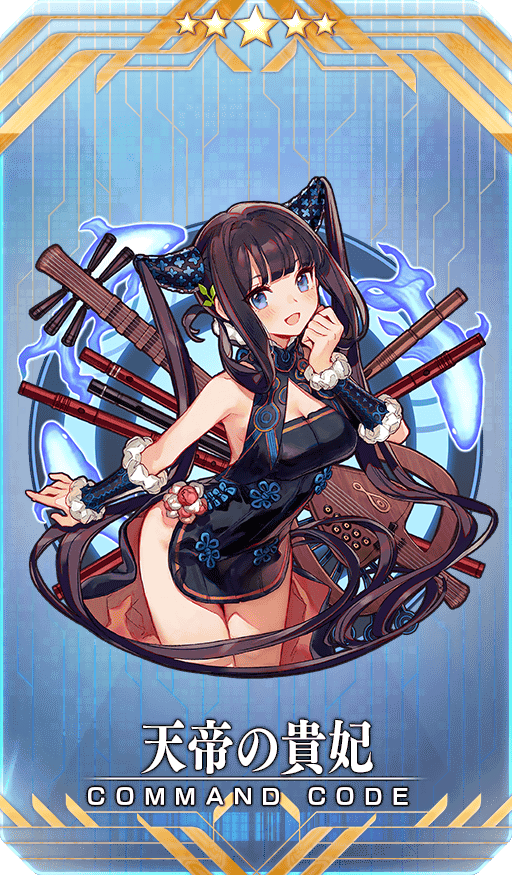 |
★★★★★SSR
|
| 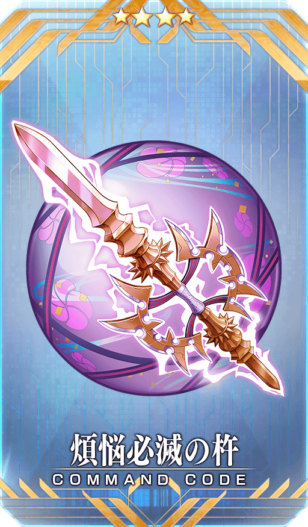 |
★★★★SR
|
|
★★★R
|
◆關於報酬指令紋章的注意◆
在2020年舉辦的期間限定活動「虛數大海戰 幻想急航 ～上浮吧鸚鵡螺號～」中獲得過同樣指令紋章的情況，可獲得稀有稜鏡或魔力稜鏡代替指令紋章。
※對象指令紋章的稀有度對應的可獲得報酬不同。
※就算靈基變還(販賣)在期間限定活動「虛數大海戰 幻想急航 ～上浮吧鸚鵡螺號～」獲得過的各指令紋章而消失的情況，在「主線分支 虛數大海戰 幻想急航 ～上浮吧鸚鵡螺號～」中的報酬仍會變成稀有稜鏡和魔力稜鏡。

【10月28日(五) 17:00追記】
「★5(SSR)梵谷」的新「幕間物語」，在迦勒底之門永久追加。
能入手聖晶石做為關卡通過報酬。
另外，11月4日(五) 11:59為止的期間中，就算未持有「★5(SSR)梵谷」也能開放「幕間物語」！
由於開放條件也變成期間限定的特別開放條件，務必藉此機會通過「★5(SSR)梵谷」的「幕間物語」吧！
※超過『「主線分支 虛數大海戰 幻想急航 ～上浮吧鸚鵡螺號～」發佈記念宣傳活動』期間限定開放期間的情況，「★5(SSR)梵谷」的「幕間物語」開放條件會切換成平常的開放條件。
※關卡通過時的報酬內容沒有變化。
◆追加時間◆
2022年10月28日(五) 17:00～
◆期間限定開放期間◆
2022年10月28日(五) 17:00～11月4日(五) 11:59
|
◆平常開放條件◆ ◆關卡通過報酬◆ |

|


◆「幕間物語」平常開放的注意◆
※未持有「★5(SSR)梵谷」的情況，關卡不會出現。
※關卡沒有舉辦期限。
※在期間限定開放期間中，已經通過「★5(SSR)梵谷」幕間物語的情況，無法再度遊玩。
【10月28日(五) 17:00追記】
「★5(SSR)梵谷」的「幕間物語」以期間限定變成「就算未持有對象從者也能開放」！
「幕間物語」的開放條件也與平常時的開放條件不同，會變成期間限定的特別開放條件。
務必藉此機會通過對象從者的「幕間物語」吧！

◆舉辦期間◆
2022年10月28日(五) 17:00～11月4日(五) 11:59
※對象從者有多個「幕間物語」的情況，全部幕間物語皆為對象。 ※關卡通過時的報酬內容沒有變化。
【對象從者・幕間物語】
| 對象從者 | 對象 「幕間物語」 |
通過報酬 | 期間限定 開放條件 |
|
|---|---|---|---|---|
|
★5(SSR) 梵谷 |
第1節 |

|
聖晶石 2個 |
Lostbelt No.3 序幕(プロローグ) 通過intro.3-4 |
| 第2節NEW! |
|
聖晶石 2個 | 通過幕間第1節 | |
※對象從者的「幕間物語」就算在未持有的狀態下通過的情況，會計算在Extra任務的進行度。 ※對象從者的「幕間物語」，在未通過的狀態超過舉辦期間的情況，對象從者的「幕間物語」會回到未開放，切換成平常的開放條件。 ※關卡通過時的報酬內容沒有變化。 ※已經通過對象從者的幕間物語的情況，無法再度遊玩。
下述的期間中，主線關卡第2部(從第1章到第6章)的消耗AP變成1/4！(就算在戰鬥中撤退的情況，也會是同様的消耗量)
尚未通過主線關卡的御主，務必活用此機會吧！
◆舉辦期間◆
2022年10月26日(三) 17:00～11月30日(三) 11:59
◆對象關卡◆
主線關卡第2部(從第1章到第6章)
※現在到主線關卡第2部 第6章為止的消耗AP是永久變成1/2的狀態。因此，宣傳活動結束後，該主線關卡的消耗AP會變成1/2。 ※請注意亞種特異點(從Ⅰ到Ⅳ)、第2部 第5.5章、主線分支、自由關卡為對象外。
其他還有，『「主線分支 虛數大海戰」發佈記念Pick Up召喚』以期間限定同時舉辦！
關於詳情，請自下述橫幅確認。
■「主線分支 虛數大海戰」發佈記念Pick Up召喚詳細情報